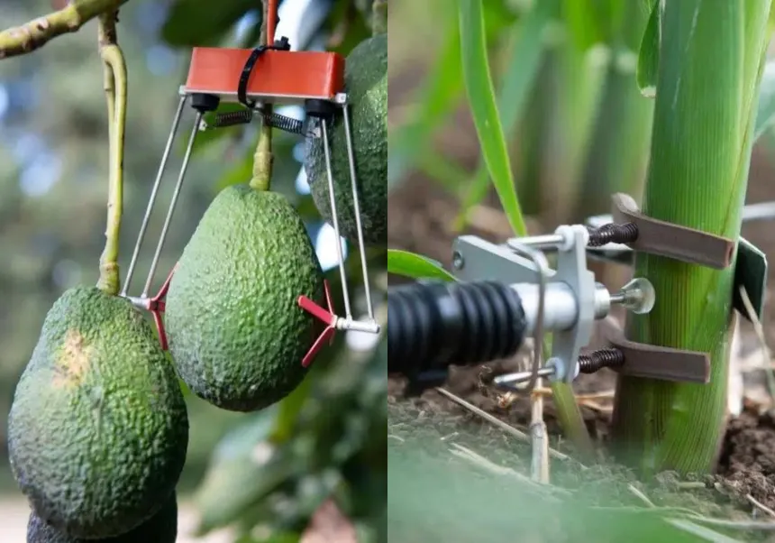
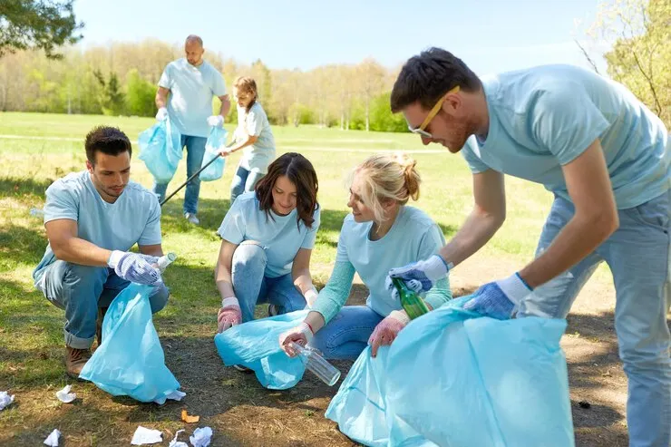
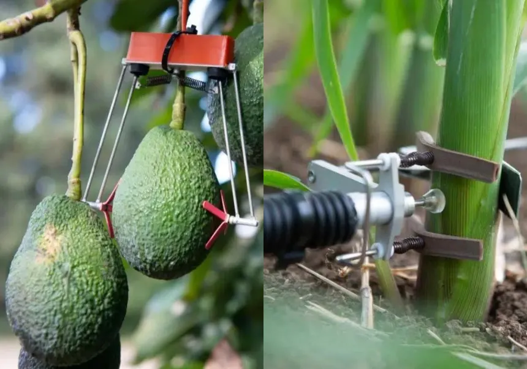
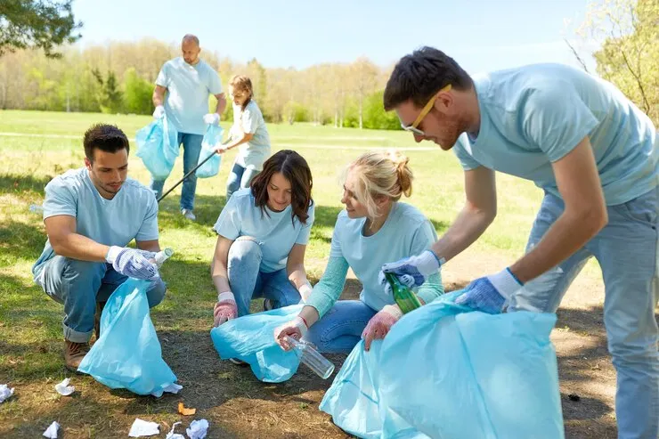

Sostenibilidad y ODS
Nuestro proyecto nace bajo la premisa de cuidar y mantener nuestros parques y bosques. Apostamos por una sostenibilidad ciudadana donde el pueblo y organizaciones colaboren por un bien común.
¿Qué ODS están relacionados con nuestro proyecto?
ODS 3: Salud y Bienestar
Al cuidar y mantener nuestros parques y bosques, la calidad del aire que respiramos aumenta y se crean espacios naturales donde cualquiera puede disfrutar del ocio de trabajar en equipo por el bien de nuestros parques naturales, o del nacimiento (y recuperación) de nuevas zonas verdes, donde jóvenes y adultos pueden disfrutar de actividades de ocio al aire libre.
ODS 7: Energía Asequible
El sistema de riego que planteamos puede sonar algo costoso y contraproducente energéticamente hablando, pero nada más lejos de la realidad, el uso de energías renovables para alimentar los sensores y diferentes bombas de regadío demuestran que puede ser un sistema autosuficiente y limpio.
ODS 11: Ciudades Sostenibles
Todos queremos que nuestras ciudades y pueblos sean más saludables y duraderos. Gracias a nuestro proyecto, vecinos y organizaciones sin ánimo de lucro pueden unir fuerzas cuidando de forma organizada aquellas zonas verdes y naturales apostando por una sostenibilidad más ciudadana, donde el pueblo y organizaciones locales, nacionales o incluso mundiales colaboren por un bien ciudadano.
ODS 13: Acción por el Clima
La sequía en temporadas de verano es siempre uno de los principales problemas, que afectan ya no solo al entorno, sino a nosotros mismos. Por ello, es importante que, con el sistema que proponemos, se identifiquen aquellos ecosistemas verdes más perjudicados por el calor y la falta de lluvia, optimizando el regadío para contrarrestar los efectos del cambio climático.
ODS 15: Vida de Ecosistemas Terrestres
Desde la fauna hasta la flora, es vital mantener el ecosistema natural en equilibrio. Nuestro proyecto se especializa en todo aquello relacionado con la flora y el terreno, aunque de forma inmediata también se ve beneficiada la fauna local, permitiendo también mantener a raya los posibles efectos negativos que el factor humano y climático pudieran tener sobre ellos.
ODS 17: Alianzas
La unión hace la fuerza, y una sola persona por muy buenas intenciones que tenga no sería capaz de llevar a cabo un mantenimiento organizado y beneficioso para el medio ambiente, como el que planteamos en nuestro proyecto. Solo con la colaboración y conexión entre ciudadanos, vecinos, amigos, ONGs y entidades públicas interesadas, se puede llegar al punto ideal que planteamos, donde la organización adecuada de cada voluntario significa una parte vital.
 



Relevancia para el Sector Tecnológico
Todos estos ODS relacionados con nuestro proyecto son relevantes también para el sector tecnológico porque, ¿qué significa el código de un programa si no tiene un propósito? Todos estos objetivos de desarrollo son relevantes y tienen unos requisitos, objetivos y necesidades que la tecnología puede suplir sobradamente, siempre usada de forma adecuada. No es publicidad, no es corporación, es sobre la gestión de recursos vitales que, aún a día de hoy, son críticos, como el agua y la electricidad. Por ello nuestro proyecto está enfocado en el mercado de la tecnología “verde”, hacia dónde se dirige el futuro tecnológico, y el mundo entero.
Riesgos y oportunidades
Sin embargo, somos conscientes de las desventajas a las que nos enfrentamos. Al tener la necesidad de trabajar con mapas y cumplir con un seguimiento constante de la flora, manteniendo bases de datos en servidores, hace que la huella de carbono digital generada sea una cosa a tener en cuenta. Además, por muy novedosos que sean los sistemas de riego que proponemos, movidos por energías renovables, no dejan de ser aparatos con una cierta vida útil, y que necesitan ser mantenidos de forma correcta, para que no acaben siendo basura tecnológica.
Aunque siendo positivos, una gran virtud de nuestro proyecto es su tendencia a la escalabilidad, gracias a que puede ser una idea atractiva y novedosa que bien podría instalarse en pequeñas zonas verdes, o parques naturales con una extensión considerable, pudiendo llegar a zonas por todo el país, incluso con posibilidad de extenderse a nivel europeo.
En lo personal, creemos que uno de los puntos que pueden pasar más desapercibidos sobre nuestro proyecto es que el propósito no es solo mantener los entornos, sino educar a las personas y crear una cultura y cierta concienciación que fomente el respeto al medio ambiente. Algo genial que es una necesidad inculcar a todas las personas para que futuras generaciones se sigan preocupando por cuidar el futuro, y no solo el hoy.
Tabla Resumen:
| Ámbito | Descripción |
|---|---|
| Riesgos (Huella Digital) | El seguimiento constante y el mantenimiento de bases de datos generan una huella de carbono digital |
| Basura Tecnológica | Los aparatos tienen una vida útil, necesitan mantenimiento para no convertirse en residuos |
| Oportunidades | Alta escalabilidad: desde pequeñas zonas verdes hasta parques naturales a nivel europeo |
| Educacón | Fomentar una cultura de concienciación y respeto para las futuras generaciones |
Acciones concretas como desarrolladores
Para empezar predicando con el ejemplo nos tenemos que comprometer desde el principio, por ello nos preocupamos de que nuestro código no provoque un derroche de energía innecesario, optimizándolo pensando tanto en el rendimiento de la web, como en el peso que tendrá energéticamente en los servidores, los cuales procuraremos que sean sostenibles y eficientes. Además, la sostenibilidad también tiene un ámbito social, por lo que nos preocupamos de aplicar estándares de accesibilidad para que cualquier persona pueda participar y conocer nuestro proyecto.